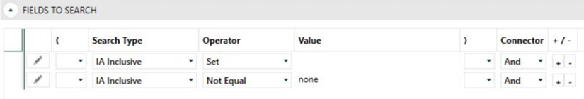
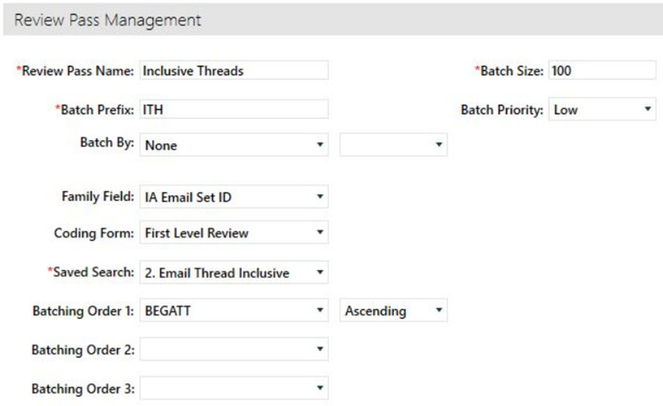

For email threading, one way of build batches is using inclusive email thread batch review. In this scenario, you set up batch review by email thread to exclude documents whose text is fully contained within another email. By excluding emails in a thread that are wholly contained within another email, you can greatly decrease the number of documents reviewers must review and the total review time, while still allowing for review of all content in every document.
Create a new Advanced Search called Email Thread Inclusive. Do not include families on the search by ensuring the box for Include Family is empty.
The criteria of the search should identify all documents that received an IA Inclusive value, include their families, and exclude any duplicates. This can be accomplished with the following criteria.

Set Batching Order 1: in your Review Pass to BEGATT descending
Choose a batch size to fit your needs.
Identify a batch prefix.
Set the family field to IA Email Set ID to ensure all families and threads are kept together.
Save and Create Batches.

Related Topics